광학기능사 (2007-04-01 기출문제)
1과목: 광학일반
1. 사람의 눈이 느끼는 빛의 세기인 광원의 광출력을 나타내는 단위는?
- 와트(watt, W)
- 루멘(lumen, lm)
- 데시벨(decibel, dB)
- 파장(nanometer, nm)
(정답률: 알수없음)

2. 어떤 물체를 조리개 4에 1/400초로 촬영하는 것이 적당한 노출이라면 조리개를 8로 할 때의 시간은 얼마인가?
- 1/50 초
- 1/100 초
- 1/400 초
- 1/800 초
(정답률: 알수없음)
3. 렌즈의 무반사 광학박막은 어떤 광학현상을 이용한 것인가?
- 빛의 굴절
- 빛의 분산
- 빛의 간섭
- 빛의 회절
(정답률: 알수없음)
4. 다음 중 빛의 회절을 이용한 것은?
- 격자분광기
- 프리즘분광기
- 통신용 광섬유
- 액정표시장치(LCD)
(정답률: 알수없음)
5. 맑은 날의 파란 하늘과 붉은 저녁 노을의 현상을 광학적으로 가장 적절하게 설명한 것은?
- 대기에 의한 빛의 굴절현상이다.
- 대기에 의한 빛의 분산현상이다.
- 대기에 의한 빛의 산란현상이다.
- 대기에 의한 빛의 간섭현상이다.
(정답률: 알수없음)
6. 간섭계의 종류와 그 응용에 관한 연결이 잘못된 것은?
- 패브리-빼로(Fabry-Perot) 간섭계 : 분광기에 사용
- 마이켈슨-몰리(Michelson-Morley) 간섭계 : 박막두께 측정
- 트위만-그린(Twyman-Green) 간섭계 : 렌즈면의 검사
- 회전 삭냑(Sagnac) 간섭계 : 자이로스코프에 사용
(정답률: 알수없음)
7. 다음 중 광도의 단위는 어느 것인가?
- 칸델라
- 루멘
- 와트
- 룩스
(정답률: 알수없음)
8. 다음 중 빛의 진행 방향을 90° 또는 180° 변환시키기 위해 사용되는 것은?
- 렌즈
- 프리즘
- 필터
- 편광자
(정답률: 알수없음)
9. 초점거리 10cm 인 볼록렌즈의 앞쪽 15cm 되는 곳에 물체가 있다. 이 물체의 상에 대하여 올바르게 기술한 것은?
- 렌즈의 뒤쪽에 도립 허상
- 렌즈의 앞쪽에 정립 허상
- 렌즈의 뒤쪽에 도립 실상
- 렌즈의 앞쪽에 정립 실상
(정답률: 알수없음)
10. 프리즘에 백색광을 통과시키면 무지개 빛을 볼 수 있다. 이것은 물질의 어떤 성질 때문인가?
- 산란
- 회절
- 분산
- 복골절
(정답률: 알수없음)
11. 다음 광선 중 에너지가 가장 큰 것은?
- 자외선
- 빨강색
- 파랑색
- 적외선
(정답률: 알수없음)
12. 다음 중 스펙트럼에 의해 분산된 색광에서 파장이 가장 짧은 색은?
- 빨강
- 노랑
- 파랑
- 보라
(정답률: 알수없음)
13. 굴절률이 1 인 공기 중에서 굴절률이 4/3 인 물속으로 빛이 입사하고 있다. 수면의 수직한 축과 이루는 입사각이 30° 라면 굴절각(θ)은 얼마인가?
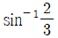
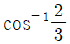
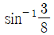
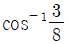
(정답률: 알수없음)
14. 다음의 표는 여러 가지 물질의 빛에 대한 굴절률이다. 고체를 액체 속에 넣고 액체의 위쪽에서 내려다 보지 않고 측면에서 비스듬히 볼 때, 액체 속의 고체가 가장 잘 보이는 경우는?
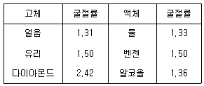
- 다이아몬드를 물에 넣을 때
- 얼음을 물에 넣을 때
- 얼음을 벤젠에 넣을 때
- 유리를 베젠에 넣을 때
(정답률: 알수없음)
15. 다음 중 볼록거울의 상으로 나타날 수 있는 것은?
- 도립 허상
- 도립 실상
- 정립 허상
- 정립 실상
(정답률: 알수없음)
2과목: 광학가공
16. 다음 중 원자상태의 기체 광원에서 나오는 빛을 분산시켜 얻어지는 스펙트럼은?
- 선 스펙트럼
- 띠 스펙트럼
- 연속 스펙트럼
- 프라운호퍼 스펙트럼
(정답률: 알수없음)
17. 빛이 굴절률 1.7인 기판에 수직으로 입사할 때 반사율은 약 얼마인가?
- 4.3%
- 6.7%
- 8.6%
- 12.6%
(정답률: 알수없음)
18. 굴절율 1.5인 유리와 공기면에서의 전반사각 θ는?
- sinθ = 2/3
- cosθ = 2/3
- tanθ = 2/3
- tanθ = 3/2
(정답률: 알수없음)
19. 전자기파 스펙트럼 중에서 가시광선 보다 파장이 짧고 살균작용에 이용되는 광선은 무엇인가?
- 초단파
- 적외선
- 자외선
- 알파선
(정답률: 알수없음)
20. 다음 사람의 눈 구조 중에서 가장 부피가 큰 것은?
- 각막
- 초자체
- 수정체
- 방수
(정답률: 알수없음)
21. 다음 중 편광에 대한 설명으로 틀린 것은?
- 태양으로부터 오는 자연광은 비편광 상태이다.
- 백열전구의 빛은 비편광 상태이다.
- 태양 빛은 공기 중에서 전파될 때 편광될 수 있다.
- 유리 표면에서 반사된 빛은 항상 일정한 편광상태이다.
(정답률: 알수없음)
22. 광학계(가시광선용 결상)의 설계 및 분석에서 기준이 되는 빛의 파장은?
- 656.3 nm
- 587.6 nm
- 546.0 nm
- 486.1 nm
(정답률: 알수없음)
23. 근점이 100cm인 원시안인 사람이 25cm 떨어져 있는 물체를 선명하게 보려면 초점거리가 얼마인 렌즈를 착용해야 하는가?
- 20cm
- 33cm
- -20cm
- -33cm
(정답률: 알수없음)
24. 볼록렌즈를 사용하여 평행광을 초점에 모으려 해도 점광원이 되지 않고 초점의 크기가 어느 크기 이하로는 줄어들지 않는 근본 원인을 옳게 설명한 것은?
- 적외선과 자외선이 통과되기 때문이다.
- 빛이 여러 파장으로 구성되어 있기 때문이다.
- 빛의 회절에 의한 한계 때문이다.
- 렌즈를 통과한 빛과 주변광이 굴절하기 때문이다.
(정답률: 알수없음)
25. 사진기, 현미경, 망원경 등은 빛의 어떤 특성을 이용하여 만들어진 것인가?
- 굴절
- 분산
- 간섭
- 회절
(정답률: 알수없음)
26. 그림은 렌즈의 곡률 반경(R)을 간이식 곡률계로 측정하는 것을 나타낸 것이다. R의 관계식이 옳은 것은?
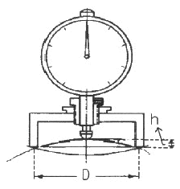
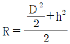
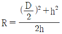
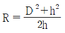
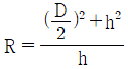
(정답률: 알수없음)
27. 다음 중 렌즈의 편심(decenter)은 무엇을 의미하는가?
- 렌즈의 광축이 렌즈의 중심에 있지 않는 것
- 렌즈 상하방향의 곡률과 좌우방향의 곡률이 다른 것
- 렌즈의 중심부가 많이 연마되어 중심부의 곡률이 작아진 것
- 렌즈의 모서리 부분이 많이 연마되어 모서리의 곡률이 작아진 것
(정답률: 알수없음)
28. 광학평면 가공 도중에 피죠(Fizeau)간섭계를 이용하여 평면을 검사할 때 1개의 환(ring) 무늬가 사라졌다면 어느 정도의 돌출부가 제거되었다고 볼 수 있는가?
- 1 파장
- 1/2 파장
- 1/4 파장
- 1/10 파장
(정답률: 알수없음)
29. 다음 중 비구면 렌즈 가공을 위한 기술이 아닌 것은?
- 금형증착기술
- 사출성형기술
- 유리성형기술
- 연삭가공기술
(정답률: 알수없음)
30. 다음 중 연마제가 갖추어야 할 구비조건으로 옳은 것은?
- 가공하는 재료보다 무를 것
- 마모되기 쉬울 것
- 입자의 크기가 균일할 것
- 재료보다 용융점이 낮을 것
(정답률: 알수없음)
3과목: 광학기기
31. 다음 중 단층 무반사막 증착에 사용할 물질로 가장 적합한 것은?
- 렌즈 재질보다 용융점이 높은 물질
- 렌즈 재질보다 비중이 높은 물질
- 렌즈 재질보다 굴절률이 낮은 물질
- 렌즈 재질보다 투과율이 낮은 물질
(정답률: 알수없음)
32. 다음 중 금속반사막을 코팅하였을 때 가시광선과 적외부 즉, 0.4~1.0μm 에서 반사율이 전반적으로 가장 큰 것은?
- Ag
- Al
- Au
- Cu
(정답률: 알수없음)
33. 다음 박막제조기술 중 진공증착 방식이 아닌 것은?
- 저항가열법
- 유도가열법
- 직류 이온화법
- 전자빔 가열법
(정답률: 알수없음)
34. 다음 중 연삭과 거친 연마에 적합하지 않은 연마제는 어느 것인가?
- 다이아몬드 저석
- 용융 알루미나질 저립
- 탄화규소질 저립
- 산화세륨(세륨옥사이드)
(정답률: 알수없음)
35. 렌즈에 묻어 있는 피치를 닦아내는 가장 적절한 방법은?
- 미지근한 물에 담가 흔든다.
- 면도칼로 긁어낸다.
- 비눗물로 닦는다.
- 신너(thinner)에 담가 놓았다가 꺼내어 닦아낸다.
(정답률: 알수없음)
36. 다음 중 광학 유리의 주 성분은 무엇인가?
- SiO2
- NaCl
- Fe
- Cu
(정답률: 알수없음)
37. 렌즈 조립을 위해 볼록 렌즈의 성질을 그림으로 나타낸 것이다. 다음 중 틀린 것은?
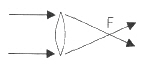
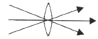
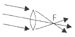
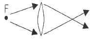
(정답률: 알수없음)
38. 가시광선 파장의 일반적인 범위로 가장 적절한 것은?
- 180nm ~ 400nm
- 320nm ~ 560nm
- 380nm ~ 780nm
- 560nm ~ 980nm
(정답률: 알수없음)
39. 카메라 교환렌즈의 밝기(F)가 다음 숫자와 같이 각각 표현될 때 물체의 상이 가장 밝은 것은?
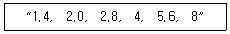
- 1.4
- 2.8
- 4
- 8
(정답률: 알수없음)
40. 광소자에 대한 설명으로 잘못된 것은?
- 광 기능 소자에는 능동소자와 수동소자가 있다.
- 발광소자는 전기신호를 광신호로 변환시켜 주는 소자로 LED가 있다.
- 수광소자는 광신호를 감지하여 전기신호로 변환시켜 주는 소자로 LD가 있다.
- 광소자는 빛을 발생, 처리, 감지하는 기능을 수행하는 소자를 말한다.
(정답률: 알수없음)
41. 명시거리가 20cm인 사람을, 정상인의 명시거리인 25cm로 하려면 어떤 안경을 착용하여야 하는가?
- 초점거리 10cm의 볼록렌지
- 초점거리 100cm의 볼록렌지
- 초점거리 10cm의 오목렌지
- 초점거리 100cm의 오목렌지
(정답률: 알수없음)
42. 제작된 망원경으로 사물을 관찰하니 물체 주위에 푸른 색의 띠가 형성되었다면 그 원인으로 옳은 것은?
- 색수차가 보정되지 않았다.
- 코마수차가 있기 때문이다.
- 왜곡 현상이 있기 때문이다.
- 구면수차를 보정하지 않았다.
(정답률: 알수없음)
43. 렌즈의 굴절능과 디옵터에 대한 설명으로 틀린 것은?
- 일반적으로 초점거리의 역수를 렌즈의 굴절능이라 한다.
- 초점거리가 길수록 굴절능은 큰 값을 갖는다.
- 초점거리가 10cm 이면 10디옵터 이다.
- 초점거리가 1m 이면 1디옵터 이다.
(정답률: 알수없음)
44. 프리즘이 프리즘 쌍안경에 사용되는 가장 큰 이유는 무엇인가?
- 정립상을 보기 위해서
- 투과율을 높이기 위해서
- 배율을 크게 하기 위해서
- 왜곡수차를 줄이기 위해서
(정답률: 알수없음)
45. 쌍안경에 8×30, 화각 7도로 표기되어 있었다. 8× 의 의미로 옳은 것은?
- 쌍안경의 배율이 8배 이다.
- 쌍안경의 밝기가 8배 이다.
- 쌍안경의 대물렌즈 크기가 8mm 이다.
- 렌즈 8장을 접착한 것으로 구성되어 있다.
(정답률: 알수없음)
4과목: 질관리와 산업안전
46. 그림과 같이 코팅하지 않은 렌즈(굴절률 1.5)에 수직으로 입사한 광의 경우 투과율은 약 몇 % 인가? (단, 렌즈 내에서의 흡수는 없다고 가정한다.)
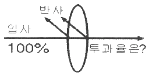
- 88%
- 92%
- 96%
- 99%
(정답률: 알수없음)
47. 4칸델라(cd)의 광원이 탁자의 중앙 50cm 위에 매달려 있을 때 탁자면 중앙의 발광 조도(lx)는 얼마인가?
- 4
- 16
- 20
- 25
(정답률: 알수없음)
48. 다음 중 단색 필터를 사용한 사진기의 성능 개선을 위해 대물렌즈에서 제거하여야 할 수차가 아닌 것은?
- 구면수차
- 왜곡수차
- 비점수차
- 색수차
(정답률: 알수없음)
49. 투명한 유리를 가루로 잘게 부수면 흰 설탕같이 보인다. 이러한 현상은 무엇 때문인가?
- 굴절
- 간섭
- 전반사
- 난반사
(정답률: 알수없음)
50. 광섬유를 접속하는 다음 방법 중 접속 손실이 가장 작은 것은?
- 컨넥터(Connector) 접속
- 접속키트(Splice kit) 접속
- 융착 접속(Fusion splicing)
- 브이-그루브(V-groove) 접속
(정답률: 알수없음)
51. 유해물질의 독성 정도를 결정하는 중요한 인자로 볼 수 없는 것은?
- 침입경로
- 작업환경 조건
- 작업숙련도
- 농도와 폭로시간
(정답률: 알수없음)
52. 진폐증 발생에 관여하는 요인들로 볼 수 없는 것은?
- 분진의 종류
- 분진의 크기
- 분진의 농도
- 분진의 색상
(정답률: 알수없음)
53. 공정개선의 원칙으로 적합하지 않은 것은?
- 비 효율성의 배제
- 공정의 간소화
- 유사 공정의 결합
- 전체 공정의 분해
(정답률: 알수없음)
54. 안전보건교육의 단계별 교육과정을 순서대로 가장 적절하게 나타낸 것은?
- 지식교육 → 태도교육 → 기능교육
- 기능교육 → 지식교육 → 태도교육
- 태도교육 → 지식교육 → 기능교육
- 지식교육 → 기능교육 → 태도교육
(정답률: 알수없음)
55. 다음은 품질관리 활동을 사이클화 한 과정이다. 빈 칸의 단계에 알맞은 기능은 무엇인가?
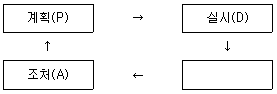
- 검토(C)
- 개발(D)
- 표준(S)
- 교육(E)
(정답률: 알수없음)
56. 교육기법 중 강의법의 장점이 아닌 것은?
- 일시에 많은 대상을 상대로 교육이 가능하다.
- 단시간 내 많은 내용의 정보 전달이 가능하다.
- 시간의 조정이 용이하다.
- 학습자로 하여금 학습에 적극적이고, 집중하기 쉽다.
(정답률: 알수없음)
57. 연삭기를 사용하는 연삭 작업시 눈을 보호하기 위한 개인 보호구는?
- 안전모
- 보안경
- 방진마스크
- 방독마스크
(정답률: 알수없음)
58. 다음 중 화학적 질식제로 볼 수 없는 것은?
- 메탄
- 황화수소
- 니트로벤젠
- 일산화탄소
(정답률: 알수없음)
59. 다음의 설명에 해당되는 검사는?
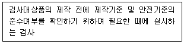
- 설계검사
- 완성검사
- 성능검사
- 정기검사
(정답률: 알수없음)
60. 안전·보건표지의 색채와 용도를 바르게 나타낸 것은?
- 녹색 : 안내
- 노랑 : 지시
- 파랑 : 금지
- 빨강 : 경고
(정답률: 알수없음)